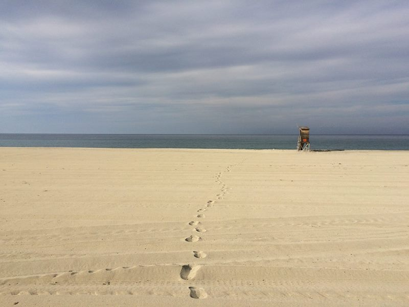
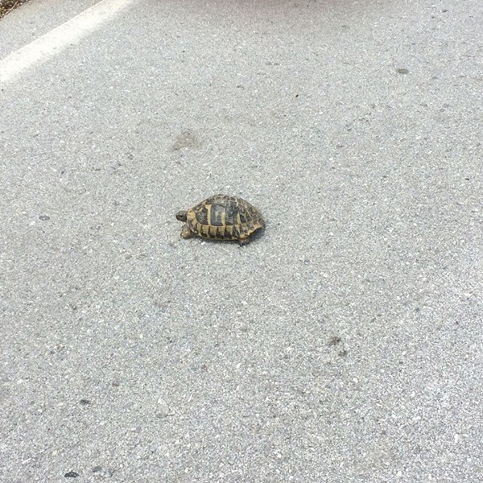
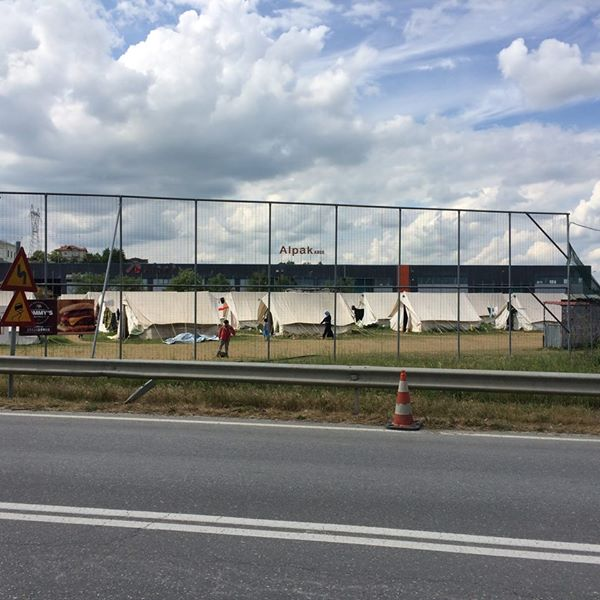
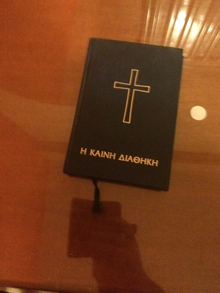
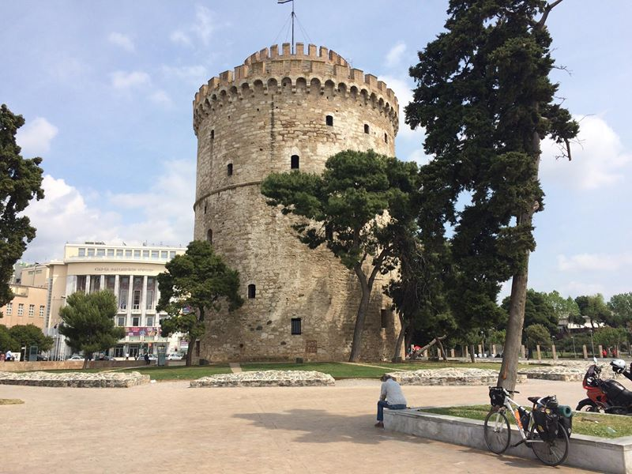
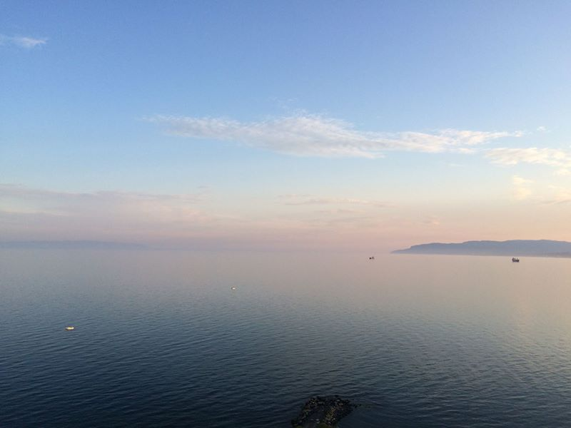
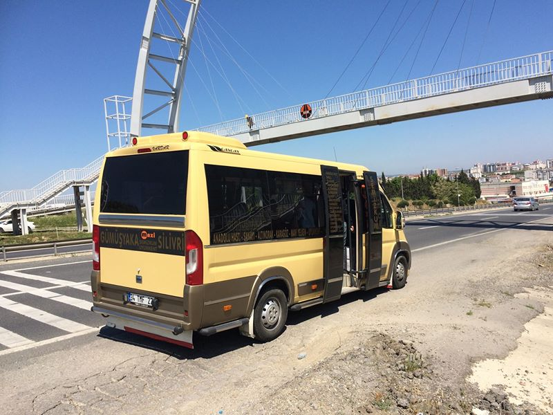

Z Řecka do Turecka na kole (3. cesta) jaro 2016
Třetí cyklojízda navázala o rok později na tu první. Cca 1600 km z hlavního města Řecka do největšího města Evropy. Je zde vše od kachniček až po Turka, který mi chtěl prodat ženu.
Třetí část cesty kolem světa. V roce 2014 to bylo z Česka do Itálie, o rok později z Itálie do Řecka a letos z Athén do tureckého Istanbulu. Takže jaké to bylo?
Tento rok jsem se nechal přemluvit a nechal přípravu kola na odborních. Podle mě stačilo jen „trochu promazat a někde možná seřídit”, podle odborníků bylo nutné vyměnit 3/4 součástek na kole. A tak jsem dostal nové pláště, přesmykač, řetěz, hlavové složení, celý střed, kliky, brzdy a ještě několik dalších nových částí.
Největší údiv odborníkům vždy způsobilo rozebrání nějaké části, protože uvnitř další části neočekávaně chyběly. Tím se vysvětluje, proč mi po každé opravě zůstalo vždy několik součástek navíc, které jsem vyhodnotil jako nadbytečné. Řídím se totiž heslem, že čím méně toho je, tím méně se toho může rozbít.
Hned po vyzvednutí zavazadel v Athénách jsem ještě u pásů začal kolo sestavovat. Kolem mě se usadilo několik Japonců (nebo možná Korejců, Číňanů či Vietnamců, kdo to pozná) a se zatajeným dechem celou akci pozorovali. Nejspíš to byl pro ně první kontakt s Evropanem a hned jsem do jejich asijských srdcí vstoupil já.
Co ale s krabicí? Nebylo ji kam vyhodit a obsluha letiště mi moc nápomocná nebyla. Takže jsem ji roztrhal na malé části a vyplnil jimi úplně všechny odpadkové koše na tříděný odpad na letišti. Japonci si samozřejmě vše podrobně zdokumentovali.
Nabaleno a dostatečně razící vyrážím do Istanbulu, yeah!
Acropolis, hlavní dominanta Athén. Tady má minulá cesta z Itálie končila. Hledal jsem dlouho místo, kde udělat fotku, až jsem kolo opřel o jeden bezvýznamný sloup. Večer jsem pak zjistil, že jsem to kolo nechal úplně na tom samém místě jako minulý rok.

Příznak v Athénách. Žena celá pokrytá bílou barvou, v jedné ruce měla kytici, druhou k sobě tiskla dítě, které hladila, a další dítě spalo za ní. Dívala se jen před sebe a nereagovala na nikoho z lidí, kteří se ji snažili oslovit řecky nebo anglicky. Působilo to děsivě.
První nocování. Vše vypadalo skvěle do chvíle, než mě našel pes přes ulici. Ani jeden z nás neviděl toho druhého, ale oba jsme věděli, že tam ten druhý je. Kdykoliv jsem se večer pohnul, začal pes vyvádět a štěkat. Protože jsem přespával ilegálně na cizím pozemku, bál jsem se prozrazení a jakýkoliv pohyb jsem mohl udělat jen tehdy, když kolem projelo auto, protože to mě ten blbeček neslyšel. Takže třeba večeři jsem jedl skoro hodinu.
A vyrážím do druhého dne. Jediná věc, která takhle člověku opravdu chybí, je sprcha. Musím ale potvrdit, že po cca 3 dnech chybět člověku přestane, jen je pak o něco těžší najít si kamarády.
První letošní kontakt s mořem. Začátek cesty je vždy regulérní boj o život, protože se zásadně nijak nepřipravuji a po celý rok se vyhývám nebezpečným pohybům, jako je třeba sport, a zaměřuji se spíše na psychickou přípravu. Dobré je, že zhruba po 3 týdnech si tělo na zátěž zvykne a už pak nic nebolí. Špatné je, že ty cesty trvají obvyle méně než 3 týdny, takže je to celkem k ničemu.
V Řecku se mluví anglicky obvykle jen v turistických destinacích, v ostatních částech se člověk s domorodými obyvateli musí dorozumívat posunky, zvuky, křikem, zpěvem a někdy i tancem. Jídelní lístek je vždy jen v řečtině, pokud si člověk chce něco vybrat, musí prstem zamířit někam doprostřed menu, takže se obvykle trefí mezi polévky a dezerty.
A vybere si třeba tohle.
Dominanta řeckých kasáren. Tyhle objekty si fotím rád, ale nesmí se to. Tady na mě vystartoval voják s polostaženými kalhotami jako z filmu Tankový prapor a upozornil mě, že jsem se fotografováním zakázených objektů dopustil hrdélního zločinu vůči řeckému lidu a mohli by mě klidně šoupnout do chládku za špionáž jako se to nedávno stalo dvěma Čechům.
A teď už do hor.
Babica style. Pokud nemáte květináč, použijte auto.
Tady mě poprvé za stmívání načapal majitel na svém pozemku. Ze začátku byl dost naštvaný, ale když pak uviděl kolo a můj zoufalý výraz, tak řekl jen „be careful” a odešel.
Velká bitva o špagety bolognese. Čtvrtý den nastane vždy krize, ráno mi bylo mizerně a po cca 25 km jsem se dobelhal do nějaké malé řecké vesničky a potřeboval se najíst. V jediné restauraci široko daleko už měli poobědovou pauzu, takže mi nejprve odmítli jídlo dát, že prý až večer, teď se nevaří. Co teď? Přežiju? Smrt hladem? Takže takhle to má skončit?
Vzpomněl jsem si na heslo „svět patří těm, co se neposerou” a rozhodl jsem se, že si to jídlo prostě vybojuji! A tak jsem po těžké bitvě přesvědčil servírku, aby mi jídlo udělala ona, protože kuchař tam už nebyl. Dokonce sehnala i špagety a zvládla s pomocí řeckých bohů a Google udělat mé nejoblíbenější jídlo pro tyto cesty, špagety bolognese. Jestli budete někdy v centrálním Řecku a narazíte na zavřenou restauraci, nasaďte drsný výraz a prostě jen řekněte „I am from Czechia”. Oni už budou vědět a jídlo dostanete.
Někde v horách.

A ještě jednou.

Zkrachovalý bar, v centrálním Řecku velmi častý obrázek. Krize z minulých let zasáhla Řecko velmi těžce a v každém městě člověk najde několik barů, které ještě před dvěma roky fungovaly.
V jednom z řeckých městeček se právě konal horský maraton. Chvíli jsem přemýšlel, zda se zúčastnit, ale přeci jen, nechtěl jsem ostatní zahanbit, těch 5 dní tréninku by se určitě muselo někde projevit.
Označení pánských toalet.
Jo, tohle můžu. Po každém přejezdu v horách musí zákonitě přijít tehle obrázek, kdy se krajina otevře a v dálce je vidět moře a následuje dlouhý sjezd.
Spaní pod hradem ve městě Lamia.
Zasněžený Olymp v dálce, můj cíl pro tento den.
Někde uprostřed ničeho.
Zvířátka na cestě.
Pozadí pro Windows XP.

Jako kůl v plotě.
Při výjezdu z Larissy dostalo moje bílé žihadlo težký zásah. Je to nejlevnější kolo široko daleko, přesto to byl první defekt zadního kola (po 4000 km). Hřebík 5 cm v plášti byl už moc.
Oprava stylově vedle aut Lamborghini. Podobnost tady je.
Odbočka na cestě do Nei Pori.
Nei Pori je město pod Olympem, kde jsem byl snad poprvé v živtě u moře. Měl jsem tady jeden velký úkol.
Najít místo, kde jsem před 16 roky bydlel. Měl jsem jen jednu nekvalitní fotku, na které jsem já (ten hezký vpravo) a můj bratranec (ten druhý vlevo). Procházel jsem ulicemi s domy, které všechny vypadají úplně stejně, a po dvou hodinách jsem to našel.
Jsem zvykly, že mám často celou pláž pro sebe. Tedy jsem měl pro sebe celé město, protože zde lidi přichází až začne turistická sezona.
Takže to vypadá jako město duchů. Připomíná to Černobyl. Jako kdyby všichni utekli před nějakou katastrofou. Žádní lidé, na silnici pohozené motorky, kolem vyhublí psi.
První letošní stopy na pláži. Trochu tuším, jak se N. Armstrong cítil po přistání na Měsíci.

Na okraji města ale naštěstí jeden hotel funguje. Je to vlastně jediná budova, která je tady v provozu. Byl jsem tam jediný host. Z mé návštěvy byli tak v šoku, že pro mě před vchod přichystali červený koberec.
A když jsem řekl, že jsem z Czechie, dostával jsem zadarmo i jídlo.
Mezikontintentální setkání. Jang byl jediný cykloturista, které jsem v Řecku za dva týdny potkal. Zastavil mě a durazně mi pokynul, abych šel na stranu. Rozvinul si židličku, vytáhl XXL foťák, dvě rozmačkané tyčinky Snickers a udělal mi přednášku o celé jeho více než roční cestě z Koreje až do Řecka. Největší dojem na něj udělal Nepál a výstup na Annapurnu.
Určitá podobnost mezi Jangem a mnou by byla, oba jsme na cestu vyrazili bez přípravy chvíli poté, co jsem si pořidili kolo. Jen Jang se sebou veze o 40 kg více závaží a je o 40 let starší než já. Teď už by měl být v Egyptě a dále bude pokračovat přes země, před kterými by vás máma varovala.
Jakub zachráncem. Odpočívám po náročném dni a najednou kolem mě prochází želva a míří si to přímo přes frekventovanou silnici na druhou stranu. Rozhodl jsem se její sebevražednou misi překazit a na druhý konec ji přenést. V budoucnu se mi to určitě vrátí na dětech.

Tady architekt zvolil poměrně netradiční řešení a místo střechy použil letadlo.
Uprchlické tábory v Keterini.

Hlavní business v Řecku. V celé zemi jsem viděl několik obchodů, kde se prodávají jen umělé labutě.
Kdepak asi udělali chybu?
Pohřebiště vlaků.
Smutný konec jednoho tyrannosaura.
Na cestě do Thessalonik. Tady bohužel začalo to, co mě provázelo zbytkem průjezdu severu Řecka: zdivočelí psi.
A v jednom případě to nedopadlo úplně nejlépe. Na jedné rušnější silnici jsem měl spor s jedním dobrmanem. Oba jsme měli odlišné názory na to, kudy bych měl pokračovat. Dobrman spor vyhrál. V každém případě nedoporučuji cykloturistiku v Řecku bez pepřáku proti psům.
Jako obranu proti psům jsem pak od místních dostal Bibli v řečtině. Jen nevím, jestli mi mělo pomoci si ji přečíst, nebo s ní psa umlátit.

Dominanta druhého největšího města Řecka.

Kousek od Thessaloniki jsem přijel do vesnice, která podle maps.me neexistuje. Místo na přespání jsem získal na farmě u člověka s typickým řeckým jménem Igor.
Koupačka v Asprovaltě. Jako obvykle jsem měl celou pláž jen pro sebe, ale to asi trochu souviselo s tím, že bylo venku 14 stupňů a silně pršelo. Lidé v péřových bundách také k idyle krásného dne na pláži příliš nepřispěli.
Kempování v Jurském parku.
Nea Peramos, jedno z nejhezčích míst na cestě. Kousek od pláže je několik malých ostrovů, kam se dá doplavat.
Město Kavala.
Velká bitva o pizzu. Do Xanthi jsem přijel už za tuhé noci a téměř bez známek života. Jít ven hledat potravu jsem zavrhl okamžitě, takže jsem se rozhodl zkusit objednat pizzu přimo na hotel. Na Google jsem si našel jednu pizzerii a zavolal tam. Pán na druhé straně linky k mé smůle neuměl ani slovo anglicky, což se výborně doplňovalo s tím, že já neumím vůbec řecky. Takže mi neustále něco říkal a já náhodně odpovídal ναί (ano) nebo όχι (ne) a opakoval „margharita” a „hotel paris” a další slovíčka podle Google překladače. Trvalo to dlouho a celý hovor mě stál více než samotná dovážka pizzy, ale skutečně mi pizzu doručili!
A ráno se i vyjasnilo, proč dovážku zvládli tak rychle. Chytrý Google mi totiž našel nejbližší pizzerii, tedy tu, která byla přímo vedle hotelu, takových 10 metrů od místa, kde jsem bydlel. Kdybych si tam došel, ušetřil bych spoustu peněz a nervů. Ale zase bychom nevytvořil světový rekord v nejkratší dovážce pizzy v historii.
Poslední den v Řecku. Těsně před hranicemi s Tureckem kolem mě projel nějaký kluk v červeném Volkswagen Brouk …
… beze slov mi dal pivo a pokračoval dále.
Na hranicích s Tureckem. Tady se uvádí značky s doporučenou rychlostí i pro tanky.

Poprvé jsem měl trochu problémy s přechodem hranic. Celník si vzal můj pas a řekl mi, že v něm nemám vízum, takže nemůžu do Turecka jet. Prý když „čekoslovakia”, tak i víza a sbohem. Museli přijít na pomoc jeho další dva kolegové a všichni tři po namáhavém boji z Windows XP vydolovali informaci, že Czechia to má už bez víza. Takže sbohem Řecko a dobrý den, Turecko!
Kachničky v Turecku přecházejí přes silnici. Nejprve jdou do silnice vyzrálé kačeny a kačeři a dospěláckým okem vyhodnotí situaci. Když nic nejede, dají pokyn a kachňata vyrazí ve skupině na nebezpečnou cestu na druhý konec silnice. Jako poslední vyráží největší kačeři, kteři popohání loudající a zlobivá kachňata. K dokonalosti chybí už jen to, aby první kachny měly plácačku „POZOR, DEJ KACHŃATŮM PŘEDNOST!”.
Turecko. Země, kde mají popelníky i u pump čerpacích stanic.
Poprvé od Albánie jsem zase viděl koňské povozy, tady dokonce včetně princezny.
V některých tureckých restauracích mají tyhle obrazovky. Objednáte si jídlo, řeknete své jméno a pak sledujete na obrazovce, za jak dlouho bude vaše jídlo hotovo. Jen teda musíte počítat s tím, že vaše jméno trochu zkomolí, tady mě zaregistrovali jako „yakup bey”.

První pohled na Marmarské moře. V Turecku je občas trochu problém s domluvou, protože tam nikdo anglicky nemluví. Musím ale ocenit obrovskou snahu místních o komunikaci. Občas se mě snažili potěšit, takže v lepším případě mě v obchodě odhadli na Francouze a poděkovali slovem „merci”, v horším mě odhadli na slovo „spasibo”.
Stejné jako v Řecku. Fotím si tank a přiběhne za mnou turecký voják a něco na mě začne volat turecky. Asi nesmím fotit, já vím. Začnu na něj mluvit anglicky. Přestane mluvit a vidím, jak bledne. Opře se o plot a dívá se do země. Úplně cítím, co mu probíhá hlavou: „Do háje, jak se to řekne anglicky, vždyť jsme se to učili v osmičce!”. A pak začne gestikulovat jakože fotí a u toho volá „No!”. Já udělám gesto jakože chápu a jakože se omlouvám a odjíždím.
Západ slunce někde v Turecku.

Restaurace v letadle.
Projíždím nějakým městem a vidím, jak na mě někdo z dálky mává. A je to tady. Po 5 tis. km mě někdo konečně chce zastavit kvůli české vlajce. Jiný důvod mít nemůže. Asi nějaký krajan. To to ale trvalo. Jsem téměř dojatý, být slabší povahy, nejspíš ukápne i nějaká ta slza. Konečně někdo ocení mojí cestu. Svět je krásné místo.
Bohužel se ukázalo, že pán je elektronický a jeho živě vypadající gesta jsou jen výplodem mysli konstruktérů.
Jedna z nejúžasnějších věcí na Turecku jsou tyhle minibusy. Jezdí všude a pořád. Je to podobné jako v Albánii. Když se chcete svézt, prostě jen mávnete a když mají místo, tak vás vezmou. Nikdo si nemůže stěžovat na to, že mají zpoždění, protože neexistuje žádný jízdní řád. Vysadí vás, kde chcete, pokud je to +/- po trati. V Albánii jsem viděl, jak jednu starší paní zavezli až před její dům. Moc se mi to líbí, kež by to bylo jednou i u nás. Jízdní řády v Česku nechceme!

Turecké vesničky.

Příjezd do Istanbulu, se 14 mil. obyvateli největšího města Evropy …
… je pro cyklisty hororový zážitek. Neustále se cesta rozdvojuje a když člověk nechce odbočit, dostává se pořád více a více do středových pásů, kde soupeří s tiráky a autobusy o svoje místo na světě. Navíc je příjezd do Istanbulu velmi kopcovitý, takže se člověk často pohybuje hlemýždím tempem, zatímco kolem něj sviští ostatní účastníci silničního provozu.
Po cca 4 hodinách jsem se ale dostal až na samý okraj Evropy, k slavnému paláci Hagia Sofia.
A ještě jednou.

A ještě jednou ve dne.
A Hagia Sofia uvnitř.
Mně se ale o něco více líbilo tady v Modré mešitě.
A strávil jsem tady docela dost času. Při vstupu si musí návštěvníci sundat boty a prochází se po koberci, který je nesmírně příjemný na chodidla. Navíc je tam chladněji, velký klid, ticho a mnoho místa.
Hlídací pes v akci.

„Neprojdeš.”
Náměstí Sultanahmet. Tady se s vámi občas někdo vyfotí, nebo odpálí. Bohužel je Istanbul místo, kde se teroristické útoky stávají často, jeden se dokonce stal i během doby, kdy jsem tam byl. Má to drastický dopad na turismus, historické centrum je úplně prázdné a jsou zde jen policejní vozy. Uprostřed Hagia Sofia jsem byl v jednu chvíli úplně sám, zvláštní pocit.
A platí to i pro hotely, které jsou v Istanbulu výrazně levnější než třeba u nás. Bydlel jsem za 20 EUR/noc přímo pod Modrou mešitou a Hagia Sofia v historickém centru a byl jsem v celém luxusním hotelu téměř úplně sám. Snídaně jsem dostával tolik, že se to ani nevejde na jednu fotku, což je zároveň odpověď na otázku, proč jsem během cesty nic nezhubl.
V Turecku je těžký najít si kámoše. Tenhle pán za mnou přišel a nejprve mi chtěl prodat koberce. Pak z něj vypadlo, že by mi raději prodal ženu. Jen lituji, že jsem neměl u sebe kameru, protože ta gestikulace, co by se s ní dalo dělat, byla více než názorná. Holt těžká doba, koberce už asi moc nevynáší.
Výzdoba tureckých oken. U nás se obvykle dává na parapet květináč, v Turecku tam spíše dávají děti.

Modlitba v poledne.
V metru.
Za 8 Kč dostanete věneček a několik veršů z Koránu.
Uličky pod náměstím Sultanahmet.
Delfíni v Bosporském průlivu. V Istanbulu je všechno.
A poslední část této mise: dostat se do Asie. Tento most Evropu a Asii spojuje. Takže ještě kousek …
… a jsem v Asii, mission completed! Za tankerem je Hagia Sofia, tentokrát už focená z jiného světadílu.
I v letadle cestou zpět jsem byl skoro sám. A dostal jsem i osobního kuchaře.

No a takové to bylo. Pokud to půjde, tak bych zase na podzim pokračoval dále přes Turecko až do Arménie a pak do Gruzie. A odtud do Abcházie, kde je turistika ilegální a kde se tak jednoduše dostat nedá, ale já věřím, že se do Suchumi nějak dostanu. Cíl pak bude na pobřeží Kaspického moře u ropných věží v azerbajdžánském Baku.